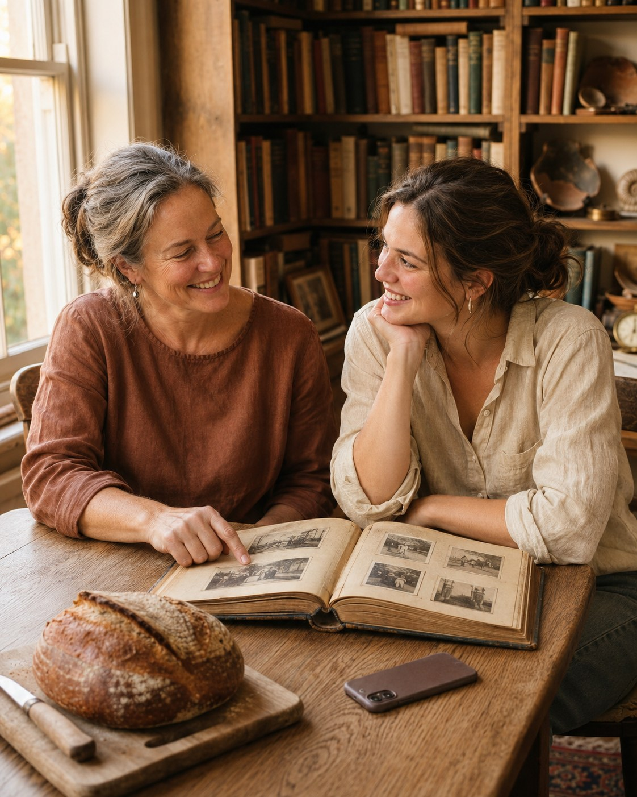

01 / Родинна пам’ять
Мамина історія
Що ви знаєте про мамине дитинство?
Знайоме сімейне фото стає приводом запитати маму про історію, якої за ним не видно.
CTAПочніть із розмови з близькою людиною.
Застосунок для збереження особистих і родинних спогадів.
Відкрити Storina ↗
Storina допомагає зберігати особисті та родинні спогади текстом або голосом. Бізнес-ціль кампанії — залучити людей, які перейдуть до продукту, зареєструються та створять перший запис для майбутньої книги.
Робочий ICP охоплює людей, які хочуть зберігати власні історії, дорослих дітей, яким цікаве життя батьків, і тих, хто хоче зібрати особисті чи родинні спогади в книгу.
Інтерв’ю допомогли визначити ситуації, в яких виникає бажання зберегти історію. Для креативів я відібрала три тригери: сімейне фото або розмова, важлива особиста подія та яскрава мить звичайного дня. Робочі бар’єри для перевірки — складно почати розмову чи запис, а майбутня книга здається великим проєктом.
Для порівняння рекламних повідомлень обрано Storyworth і Remento. Перший напрям для аналізу — запитання та майбутня книга, другий — голос як простий спосіб почати. Для Storina перевіряю третій вхід: знайома життєва ситуація та один короткий запис. Перед запуском варто зібрати конкретні оголошення й порівняти перший кадр, обіцянку та CTA.
Пропоную розглянути три ідеї для перевірки гіпотези. Кожна починається з іншого тригера, але веде до тієї самої дії: зареєструватися в Storina та зберегти перший запис для майбутньої книги.
Що ви знаєте про мамине дитинство?
Знайоме сімейне фото стає приводом запитати маму про історію, якої за ним не видно.
CTAПочніть із розмови з близькою людиною.
Деякі миті хочеться згадувати й через роки.
Поява собаки в родині показує, як зберегти контекст важливої події: чого ви чекали й що відчули.
CTAЗбережіть цю мить і розкажіть, як усе почалося.
Дитяча радість, незважаючи ні на що.
Танець під дощем показує, що для майбутньої книги є місце й для звичайного дня. У Storina будь-яку історію можна записати текстом або голосом.
CTAДодайте цю мить у свою історію.
Запитання про мамине дитинство відкриває розмову, яку легко відкладати. Карусель веде від старого фото до першого записаного спогаду.
Поява собаки в родині стає приводом зберегти не лише фото, а й історію: як довго ви чекали й що відчули в день зустрічі.
Танець під дощем показує, що для майбутньої книги є місце й для звичайного дня. У Storina будь-яку історію можна записати текстом або голосом.
Спочатку перевіряємо, чи люди розуміють продукт і наступний крок після перегляду креативу. Далі порівнюємо три концепти із загальним повідомленням про Storina за однакових умов. На сторінці продукту зберігаємо той самий шлях до першого запису.
Частка унікальних відвідувачів із кожного креативу, які зберегли перший спогад упродовж 7 днів після переходу. Показує, скільки залучених людей виконали цільову дію.
Кліки за посиланням, поділені на покази. Показує, як часто креатив спонукає перейти.
Кількість унікальних відвідувачів із кожного креативу. Показує, скільки людей фактично відкрили продукт після кліку.
Кількість завершених реєстрацій і їхня частка серед унікальних відвідувачів із кожного креативу. Показує, скільки людей вирішили спробувати Storina.
Частка зареєстрованих, які зберегли перший спогад у межах тих самих 7 днів після переходу. Допомагає оцінити, скільки людей почали користуватися продуктом після реєстрації.
Для платної кампанії ділимо витрати на кількість залучених користувачів, які зберегли перший запис у межах 7 днів після переходу.
До запуску фіксуємо мінімальний ефект, вибірку й критерій рішення.
Результати кампанії ще не зібрано.
Під час виробництва найкраще працювала послідовність із конкретної сцени, короткого запитання та однієї дії. Це висновок про дизайн, який ще потрібно перевірити з аудиторією. Після тесту зрозумілості — перевірити події аналітики та запустити порівняння креативів.